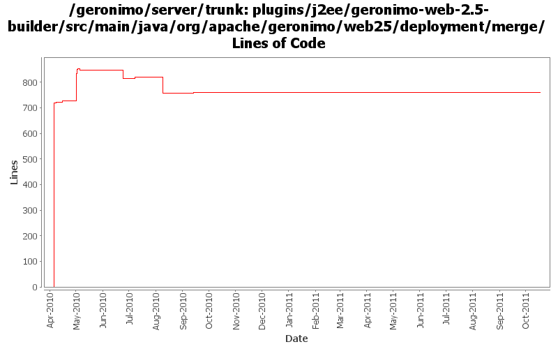

[root]/plugins/j2ee/geronimo-web-2.5-builder/src/main/java/org/apache/geronimo/web25/deployment/merge
 annotation
(5 files, 487 lines)
annotation
(5 files, 487 lines)
 webfragment
(39 files, 3350 lines)
webfragment
(39 files, 3350 lines)

| Author | Changes | Lines of Code | Lines per Change |
|---|---|---|---|
| Totals | 26 (100.0%) | 1233 (100.0%) | 47.4 |
| xuhaihong | 17 (65.4%) | 1080 (87.6%) | 63.5 |
| djencks | 6 (23.1%) | 138 (11.2%) | 23.0 |
| gawor | 2 (7.7%) | 10 (0.8%) | 5.0 |
| dwoods | 1 (3.8%) | 5 (0.4%) | 5.0 |
GERONIMO-6194 Sort gbeans while stopping the configuration
6 lines of code changed in 1 file:
GERONIMO-6143 Create a fragment context for each sub modules in the EAR package
9 lines of code changed in 1 file:
XBEAN-162 update to genericed xbean-finder apis
3 lines of code changed in 1 file:
ResourceFinderCallback API updates
4 lines of code changed in 1 file:
workaround to get the BVAL TCK working on the Tocmat assembly again. now, it's back to the previous results of only 1 failure.
5 lines of code changed in 1 file:
Fix a typo error while creating the web fragment entry
1 lines of code changed in 1 file:
GERONIMO-5496 Move the sort algorithm from the geronimo-web-builder to geronimo-j2ee-builder
91 lines of code changed in 1 file:
a bunch of minor fixes for servlet 3.0 merge code
6 lines of code changed in 1 file:
Fix the ArrayIndexOoutOfBoundsException in relative web fragment sorting
4 lines of code changed in 1 file:
GERONIMO-5436 try to fix merge helper -- needs to read in using jaxb, not xmlbeans
15 lines of code changed in 1 file:
GERONIMO-5190 use openejb-jee jaxb tree for spec dds
80 lines of code changed in 2 files:
Enable ServletContainerInitializer scanning as we have an ASM-based class finder now
26 lines of code changed in 1 file:
1. Use a full loop to find the web-fragment.xml in the embedded jar file of the bundle, might be easier once we have full ear support
2. Use the deploymentDescriptor to calculate the component permission, currently, it seems that we have no way to read the web.xml while the package is of ear type
26 lines of code changed in 1 file:
GERONIMO-5037 fix type cast problem
35 lines of code changed in 1 file:
Fix NullPointerException when no entry is found in WEB-INF/lib directory
31 lines of code changed in 1 file:
ORDERED_LIBS should be null if no absolute or relative ordering has been specified
27 lines of code changed in 1 file:
a. Calculate web permissions while starting the web module to support setServletSecurity feature in Servlet 3.0
b. Initial support ServletContainerInitializer, some improvements might be needed, such as use ASM ?
c. Support ORDERED_LIBS ServletContext attribute
124 lines of code changed in 1 file:
XBEAN-148 use new xbean-bundleutils
5 lines of code changed in 1 file:
Support ServletSecurity annotation scan, some more work might need for it while adding Servlet dynamically
7 lines of code changed in 1 file:
Different prefix for a standalone war and a war in the ear
2 lines of code changed in 1 file:
GERONIMO-5037 Make sure annotations in the web-inf/classes folder could be scanned
6 lines of code changed in 1 file:
GERONIMO-5037 Support Servlet 3.0 annotation and fragment web file
720 lines of code changed in 4 files: